The Project
Overview
Michelle S., proprietor of Language Encounters requested help in developing and prototyping her vision of a French language learning platform. Having taught business professionals and government employees as veteran in her field, Michelle's years of experience provided valuable insight into solving the main design challenge. This project was completed over the course of three weeks.
The Challenge
Design a French language learning site that incorporated features not found in competitors, specifically in-depth real-time feedback for vocabulary pronunciation. Then, find a way to prototype and demonstrate end-product functionality.
The Team
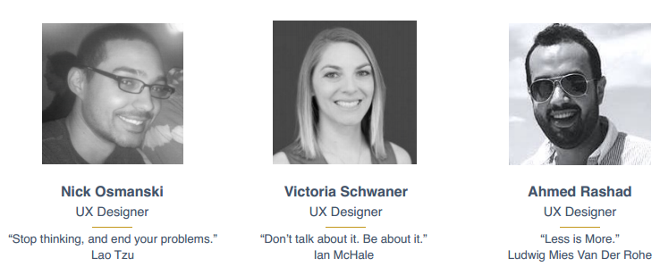For this project I worked as part of a three person team. We were fairly evenly matched in terms of design skills, but we each chose to focus on one major aspect of the challenge, resulting in a fairly even workload.
My Role
This case study will focus on my own work, but I will mention Victoria's and Ahmed's work where appropriate. I was primarily responsible for prototyping end-product functionality, and making sure that Michelle's key features were implemented in a way that was easy to follow for demoing purposes.
One of my first responsibilities was writing and designing our deliverables timeline.
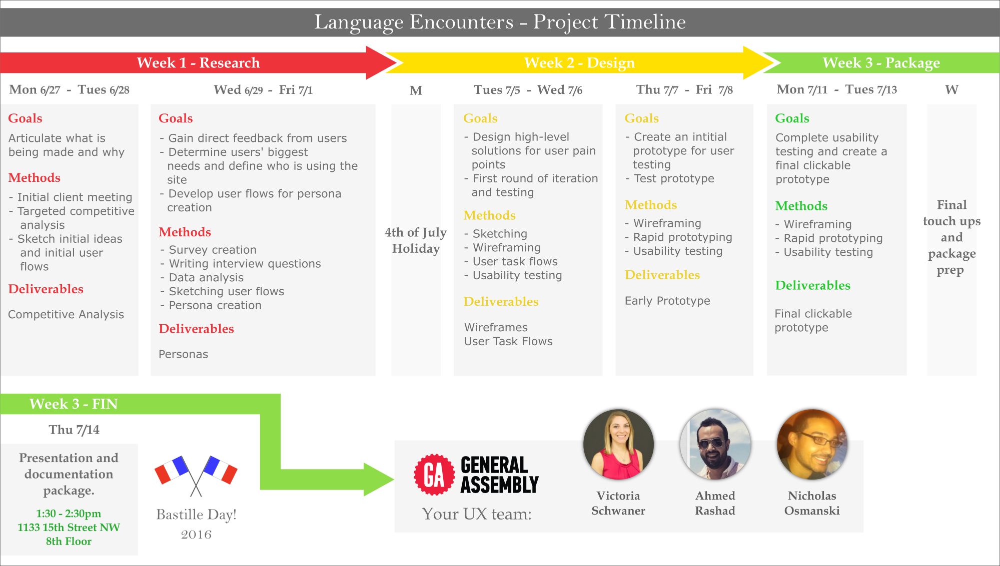Research
Student Surveys
We elected to use surveys for our initial research phase. The team worked on survey questions collaboratively. Michelle was able to give us access to her own list serve of French language students, which gave us some great information on what actual French language students wanted out of an online learning platform.
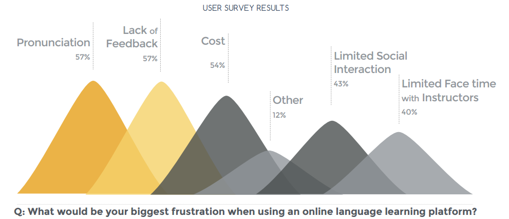Persona Creation
Michelle's descriptions of the type of student Language Encounters was intended for, combined with our survey responses, led to the creation of our primary persona, George. Victoria was primarily responsible for this persona, but I am including it for context.
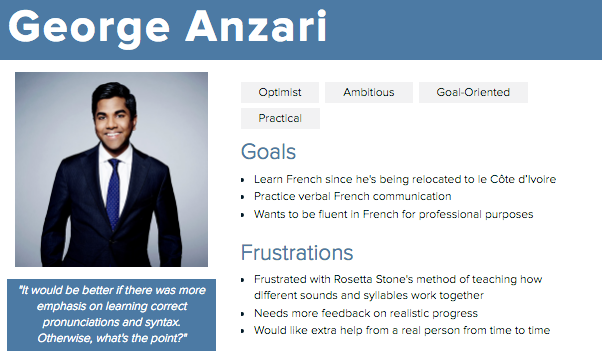Because Michelle wanted to see how her system would work starting with beginning learners, George is a beginning speaker, and our prototype reflected this learning level.
Ideation
Sketches
With research complete, each member of the team began sketching the aspects of the site they were responsible for. Ahmed was responsible for the landing page, Victoria was responsible for the dashboard, and I was responsible for the main course page, as well as subsequent exercises within the course we were prototyping.
Michelle's original plan was to use the Moodle framework for building her site, so my initial designs reflected the blocky layout of default Moodle themes. As I learned more about Moodle's flexibility, I varied my designs.
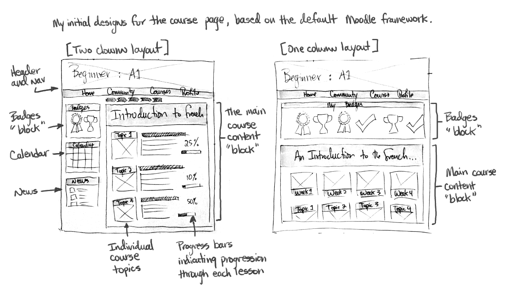 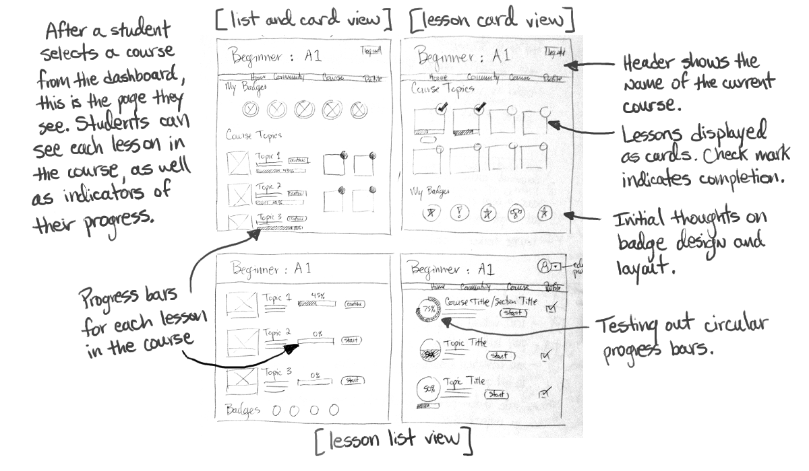 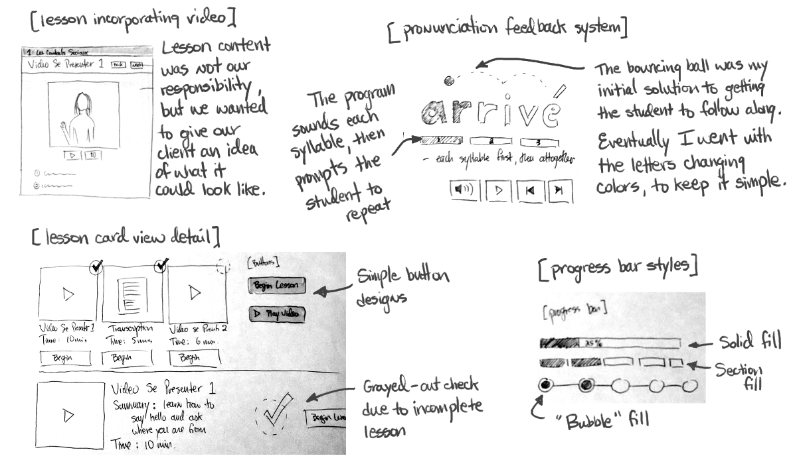Prototyping
Wireframing & Testing
Each member of the team was responsible for wireframing different sections of the site, so we decided on overall design choices at the outset. Victoria and Ahmed handled the user testing, while I incorporated the results into the vocabulary feedback prototype.
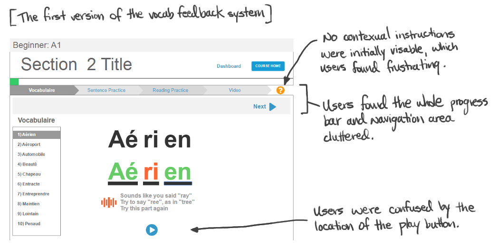 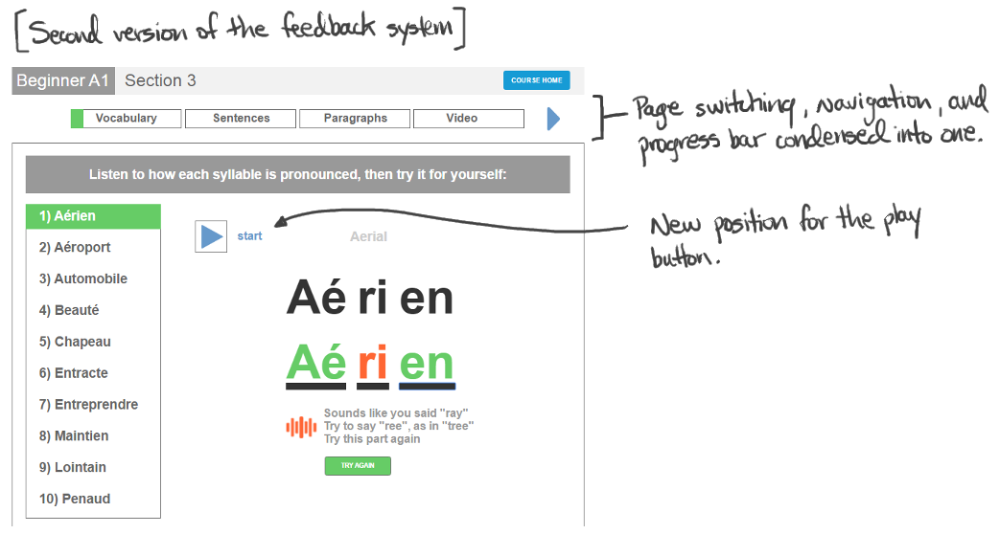 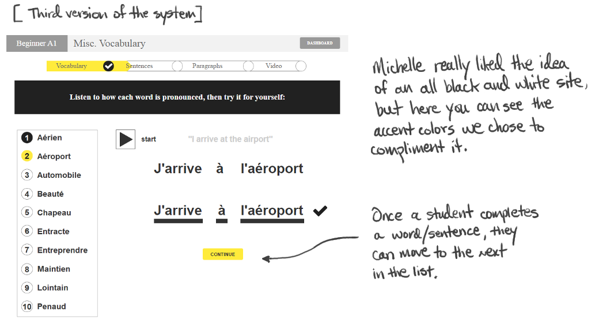Visual Design
Michelle had her heart set on "zen" simplicity, and hoped for a way to do the site in black in white. We liked the idea, but suggested some accent colors to make certain things stand out. Ahmed chose the final color palette, and I incorporated into my wireframes.
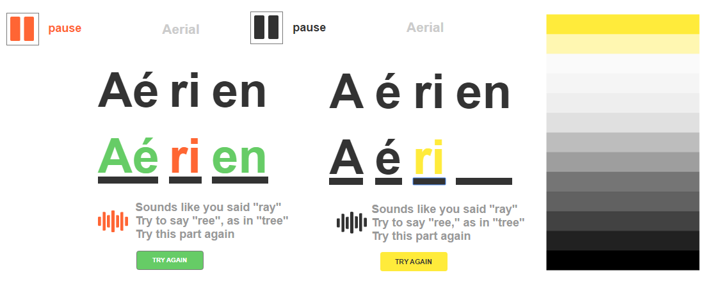 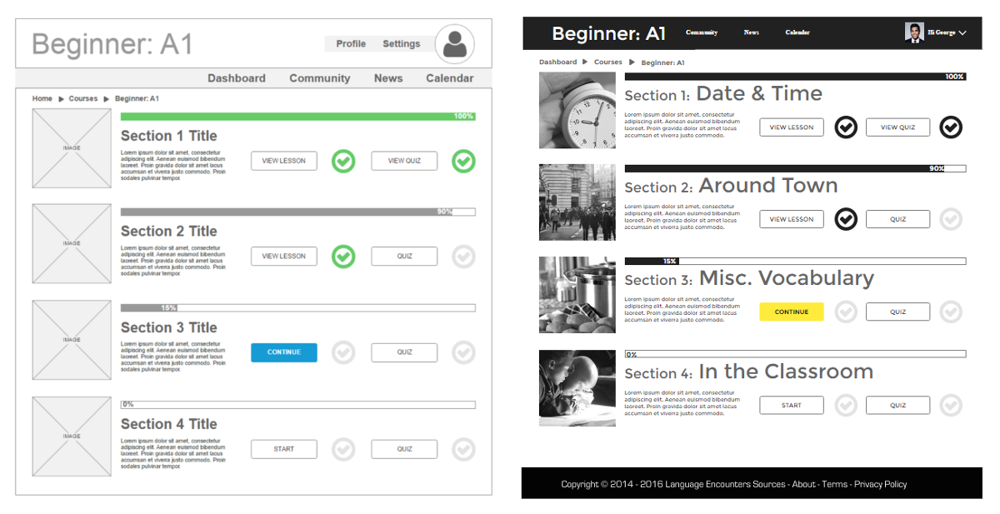Site Prototype
In the final version of the program, the student will hear each syllable of a word, then repeat it, and be given correcting feedback whenever their pronunciation is off. I have included only the demo for my own designs below, but of course our final presentation included both Ahmed and Vicotoria's work.
If you would like to click through the full prototype yourself, click here. Otherwise, the video demo of my own portion is below.
Mobile App Concept
Over the course of our meetings, Michelle mentioned several times that she would like to eventually have a mobile version of the system, or at least some kind of companion app. Although it was not specifically requested that the team design an app, I decided to create a basic mockup anyway, which I then shared with the team as well as Michelle.
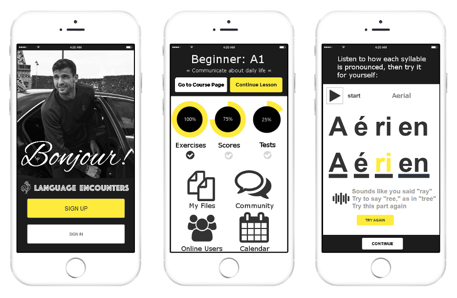I condensed and repositioned assets from the desktop site in order to build the mockup quickly. On the left screen, I used assets from Ahmed's landing page, in the middle screen I used assets from Victoria's dashboard, and on the right I used my own vocabulary feedback prototype.
Retrospective
Overall, my team worked well together, dividing up work fairly evenly and making sure to communicate any issues that came up. This was reflected in Michelle's response to our presentation: she was very happy with the way we had described her vision, and stated that we had exceeded her expectations. We designed our client presentation to be used as promotional material to help Michelle eventually recruit developers for the project, and I to that end I believe it will be very effective.
Success!
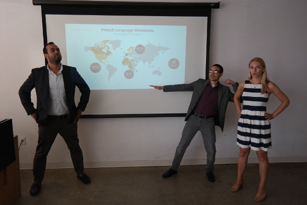